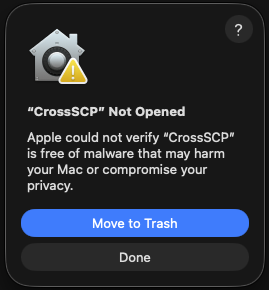
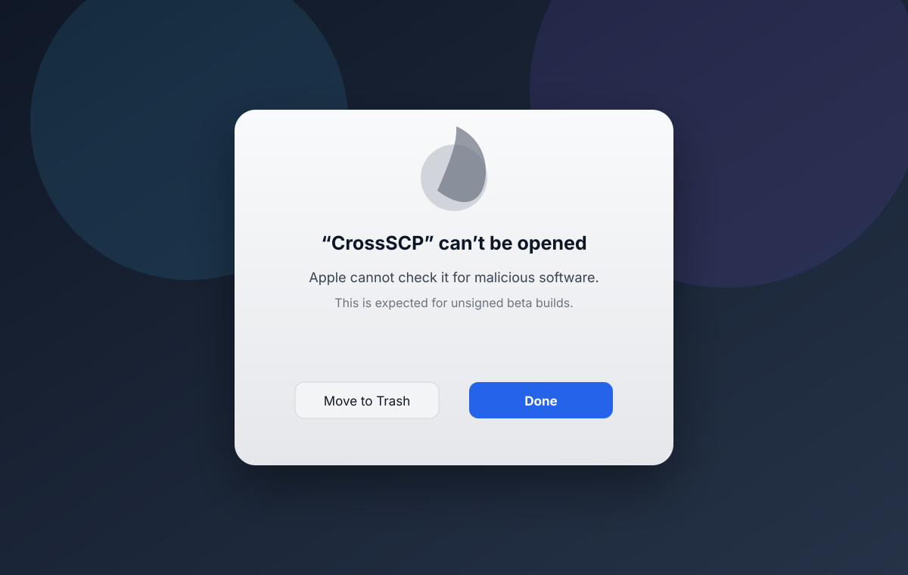
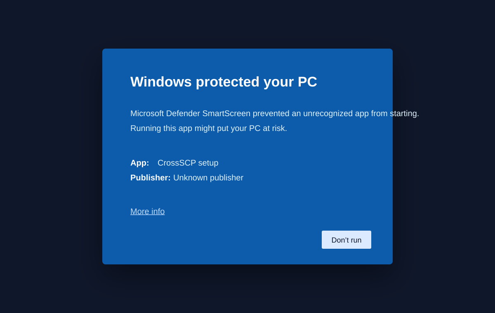
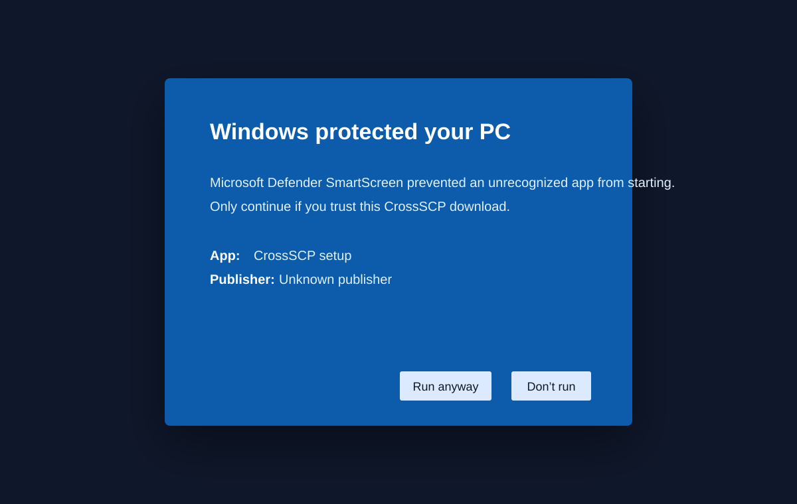
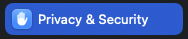
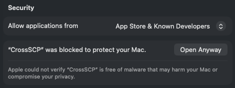
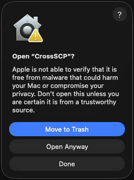

Click Done
When macOS shows Move to Trash / Done, choose Done.
Use these steps for beta releases, post-install checks, platform warnings, and complete Linux cleanup when switching between RPM, DEB, and Flatpak builds.
CrossSCP is open source and the builds are produced by GitHub Actions, but beta packages are not yet distributed through every platform's paid or official trust channel.
Browser downloads receive quarantine metadata. Without Apple Developer ID notarization, macOS may block the app. The terminal installer removes quarantine from the installed copy.
Unsigned Windows installers show Unknown/Unverified Publisher. Removing that warning requires a paid Authenticode code-signing certificate.
Downloaded DEB/RPM/Flatpak beta artifacts can be verified with checksums, but they are not equivalent to APT, COPR, or Flathub distribution yet.



shasum -a 256 -c CrossSCP-*.sha256
# Linux alternative:
sha256sum -c CrossSCP-*.sha256Recommended free tester install:
curl -fsSL https://raw.githubusercontent.com/pat229988/Cross-SCP/dev/scripts/install-macos.sh | bashsudo xattr -dr com.apple.quarantine /Applications/CrossSCP.app
open /Applications/CrossSCP.apprm -rf /Applications/CrossSCP.app
rm -rf "$HOME/Applications/CrossSCP.app"macos-terminal-install.pngIf you install the unsigned beta manually and macOS blocks the first launch, follow these approval steps.

When macOS shows Move to Trash / Done, choose Done.
Open macOS System Settings from the Dock or Apple menu.

Select Privacy & Security in System Settings.

Scroll to Security and click Open Anyway for CrossSCP.

When prompted again, choose Open Anyway.
Download the setup EXE or portable ZIP from GitHub Releases or the latest workflow artifacts.
The installer bundles Qt and Microsoft Visual C++ runtime DLLs such as Qt6Core.dll, Qt6Gui.dll, Qt6Qml.dll, vcruntime140.dll, and msvcp140.dll.
Use Settings → Apps → Installed apps → CrossSCP → Uninstall, or the Start Menu Uninstall CrossSCP shortcut.
sudo apt install ./CrossSCP-*-ubuntu-amd64.debsudo apt remove crossscp
# Deeper cleanup:
bash scripts/uninstall-linux.sh --remove-configsudo dnf install ./CrossSCP-*-fedora-x86_64.rpmIf DNF warns that the local RPM is unsigned, install only if you trust the GitHub Actions artifact and checksum.
sudo dnf remove crossscp
# Remove stale launchers too:
bash scripts/uninstall-linux.shfedora-kde-stale-launcher.pngsudo dnf install flatpak
flatpak remote-add --if-not-exists flathub https://flathub.org/repo/flathub.flatpakrepo
flatpak install --user ./CrossSCP-*-linux-x86_64.flatpak
flatpak run org.crossscp.CrossSCPThe Flatpak file can be small because the shared KDE runtime is downloaded separately from Flathub.
flatpak uninstall --user org.crossscp.CrossSCP
# If old RPM/DEB launchers remain:
bash scripts/uninstall-linux.shfedora-flatpak-install.png, fedora-kde-flatpak-launcher.pngRun from a terminal first. This shows useful errors if the desktop launcher fails.
# Flatpak
flatpak run org.crossscp.CrossSCP
# RPM/DEB
/usr/bin/CrossSCPfind ~/.local/share/applications /usr/share/applications \
~/.local/share/flatpak/exports/share/applications \
/var/lib/flatpak/exports/share/applications \
\( -iname '*crossscp*.desktop' -o -iname '*CrossSCP*.desktop' \) 2>/dev/nullkbuildsycoca6 --noincremental || kbuildsycoca5 --noincrementalThe cleanup script removes CrossSCP Flatpak, RPM, DEB installs, stale non-Flatpak desktop files, and optionally user config/cache/data.
# Preview only
bash scripts/uninstall-linux.sh --dry-run
# Remove packages and stale launchers
bash scripts/uninstall-linux.sh
# Also remove user config/cache/data
bash scripts/uninstall-linux.sh --remove-config
# Non-interactive cleanup
bash scripts/uninstall-linux.sh --yes --remove-configThis rendered page is optimized for local browsing. The full Markdown source remains available for editing and GitHub rendering: